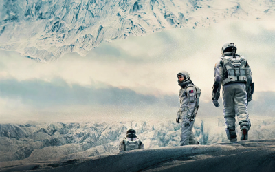
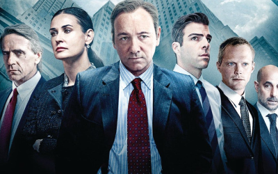
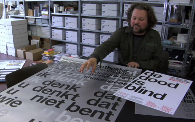
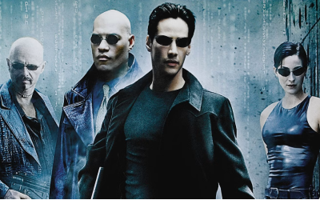
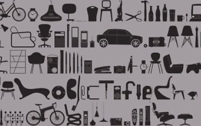
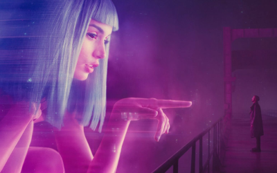
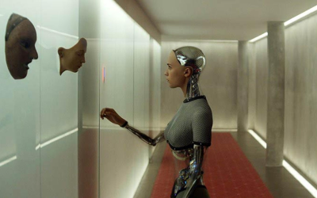
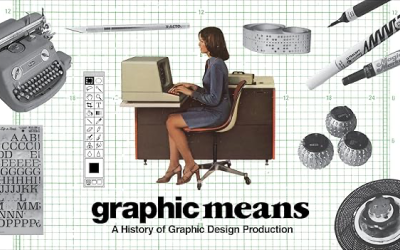
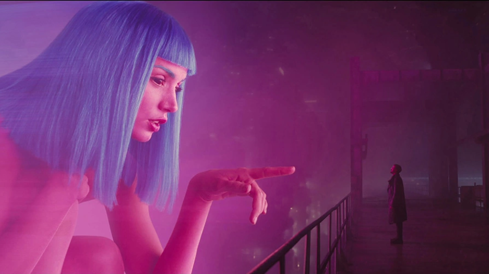
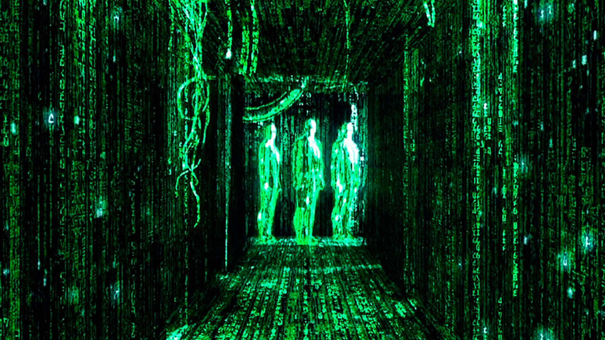

La capa de Inteligencia Educativa construida para que aprendas de lo que más amas, sin salir de la pantalla.
Pausa cualquier contenido y COOP detecta el concepto detrás de la escena, ya sea de física, finanzas o filosofía, y lo convierte en una explicación clara que puedes guardar.










COOP es una capa de conocimiento integrada en plataformas de entretenimiento. Detecta preguntas en tiempo real y las transforma en experiencias de aprendizaje sin sacar al usuario del contenido.
Estás viendo Succession o House of Cards y surge una pregunta. Un término financiero, un evento histórico o una referencia cultural despiertan tu interés.
Pausas el contenido. COOP IA analiza la escena, los subtítulos y el contexto para entender exactamente qué quieres saber.
COOP despliega una explicación interactiva en segundos y te conecta con rutas de aprendizaje más profundas.
COOP empieza como plataforma de streaming con capa educativa. Pero esa es solo la puerta de entrada. El camino lleva hacia algo más grande: devolverle a cada persona el mapa de su propia atención.
La capa educativa sobre lo que ya ves. Pausa un contenido y aparece el contexto que lo convierte en aprendizaje.
Prueba el demo ↗La comunidad lo pidió: llevar la capa educativa a donde ya ves. Sin cambiar de app, sin salir de lo que amas.
Tu aprendizaje, donde ya estás.
COOP se integra dentro de las plataformas de streaming existentes, como una capa nativa de aprendizaje.
De herramienta externa a parte del ecosistema.
Todo lo que pausas, repites y buscas dibuja un mapa de tu atención. El protocolo te lo devuelve: tuyo, privado, tu forma de aprender en tus manos.
Donde el usuario recupera su mente.
¿O el proyecto resuena contigo y construyes en EdTech?
Brayham Jaimes · UX-PM · brayhamjaimes@gmail.com